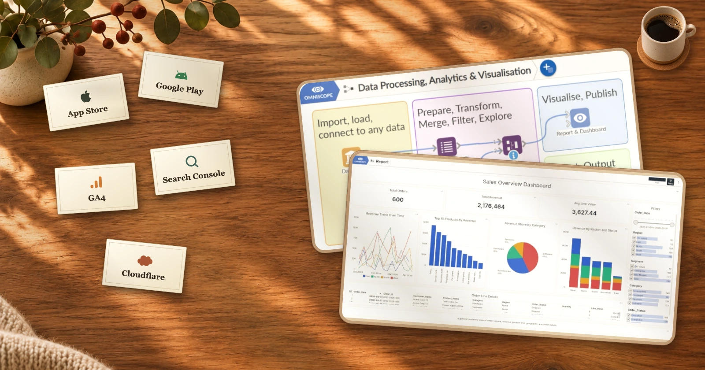
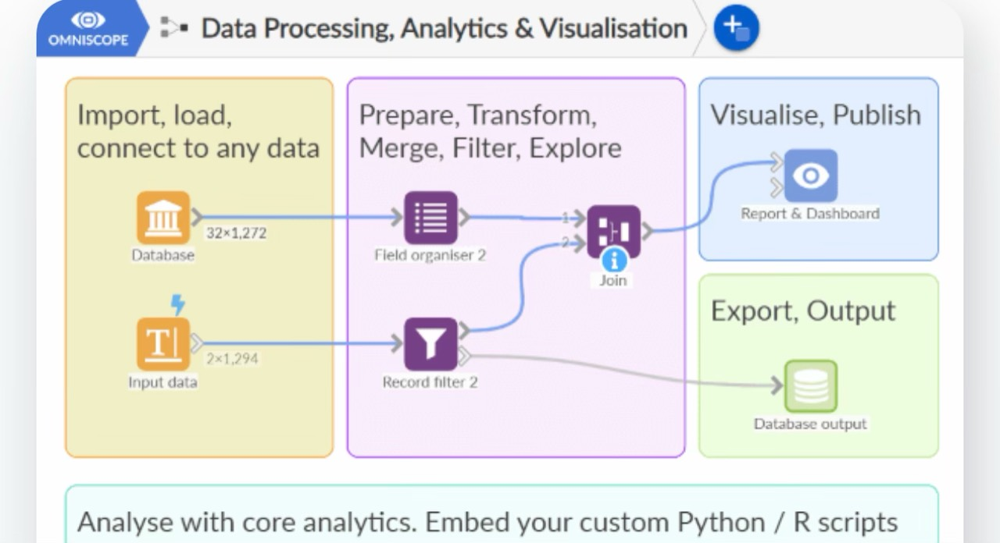
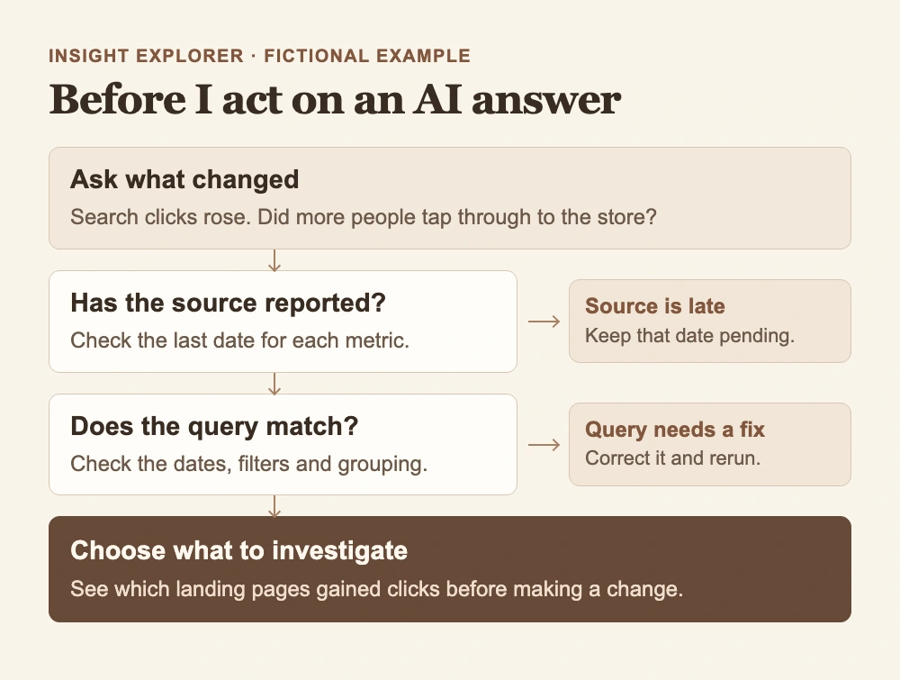

AI engineering
How I’m using Omniscope and AI for daily app analytics
I’m building a daily app analytics report with Omniscope and BigQuery. Here’s how I’d use Data Q&A to check answers about search and app-store activity.
The takeaway
Bring the feeds together with their source dates intact, then use Data Q&A to ask what changed and check the query and returned rows before acting.

The report I want to open each morning
Website and app-store reports arrive on different schedules. When I bring them together by hand, it’s easy to miss a day that a source hasn’t reported yet. If search clicks are up and fewer people tap through to the app store, which pages gained clicks, and has Google Play reported for that day?
I want one place to prepare and chart the data, then ask Insight Explorer a question in plain English and check the rows behind the answer. I’ve used an AI assistant through MCP to build parts of that Omniscope workflow from snapshots for Travel Document Vault and my websites.
The report brings together five sources with different reporting windows. Search Console shows how people find the sites, GA4 shows what they do there, and Cloudflare shows traffic at the edge. Apple and Google Play report app activity and sales. I’ve tested the initial BigQuery imports. An unattended report refresh is still to come.
The same report could help me choose what to investigate next. I’d like to try the AI Decision block to spot searches that match a job the app helps with, then use the page data to decide which landing page to improve.

Building the Omniscope workflow with AI
I could ask an AI assistant to write a dashboard from scratch. Then I’d still own the connectors, the cleanup code, the charts and the next change. Omniscope already gives me editable workflow blocks, interactive charts and a way to trace the data through both. Visokio has spent more than 20 years building tools for this kind of work. I can put the AI to work assembling the report and spend my own time on what the numbers should mean.
For the daily report I’d ask the assistant to read the BigQuery tables, standardise dates and field names, and put the feeds into a common reporting schema. I’d give it a rule for late data and ask it to build a view for each metric.
The assistant can build these extract, transform and load (ETL) steps as editable Omniscope blocks. I can open the blocks, inspect their output and compare the chart totals with the source figures. The reports sit in a dedicated Omniscope folder, and the AI connection has access only to that folder under the permissions I’ve granted.
MCP gives my external assistant access to the project. Omniscope Enterprise also has Workflow Ninja for building and explaining workflow steps inside Omniscope. I work at Visokio, the team behind Omniscope, and develop Travel Document Vault independently.

A two-day example in one reporting schema
Here’s a fictional example with simplified column names. Search Console and GA4 have two days of data. Google Play has reported acquisitions for the first day. Its second day is still pending.
In Omniscope I’d read the three BigQuery tables, set the reporting date and count types, then rename the source columns into a common shape. Each row carries its source, scope, metric, value and coverage. A coverage check adds a row for the missing Play date. Its value is NULL, which the report shows as a blank.
I’d use Workflow Ninja or an assistant connected through MCP to prepare the feeds. Then I’d ask Report Ninja to create or refine two charts, one for search clicks and one for store-link taps. Seeing them together would show me that clicks rose while taps fell. I’d ask Insight Explorer what changed and open Explain query to check how it got the answer, which rows it returned and whether the second Google Play day stayed pending.
Suppose Play returns two acquisitions on the next run. The collector adds that source day to BigQuery. The Omniscope workflow now shows two acquisitions and marks the date as reported. If the same input is replayed, I should still see one Play row for that reporting day.
Search Console date, clicks 4 Oct: 42 5 Oct: 55
GA4 date, store_tap_events 4 Oct: 5 5 Oct: 4
Google Play date, acquisitions 4 Oct: 3| Report day | Source | Scope | Metric | Value | Coverage |
|---|---|---|---|---|---|
| 4 October | Search Console | Website | Search clicks | 42 | Reported |
| 4 October | GA4 | Website | Store-link taps | 5 | Reported |
| 4 October | Google Play | Android app | Listing acquisitions | 3 | Reported |
| 5 October | Search Console | Website | Search clicks | 55 | Reported |
| 5 October | GA4 | Website | Store-link taps | 4 | Reported |
| 5 October | Google Play | Android app | Listing acquisitions | NULL | Pending |
Checking an AI answer in Insight Explorer
If I opened the fictional report on 5 October, I’d ask the Data Q&A view, called Insight Explorer, “What changed in search clicks and store-link taps, and do we have enough data to compare Play acquisitions?”
The AI works out what to query, and Omniscope runs the analysis on the data connected to the report. From the three-dot menu on a generated chart or table, I can open Explain query, select a step in the query lineage and inspect its transformation and returned rows. I can then compare those rows with the source data in BigQuery.
In this example, I’d expect 42 to 55 search clicks and 5 to 4 store-link taps. I’d check the query used 4 and 5 October and kept the second Play day pending. If the query turned the missing Play value into zero, I’d correct that before I used the chart. A chart that passes those checks can go back into the report.

Choosing what to investigate next
That would tell me where to look next. I’d ask which landing pages gained clicks and, where the website data supports it, whether visitors to those pages tapped the store link. If the extra clicks came from informational pages, I might test a clearer route to the app from one of them. I’d want to see the page breakdown before making that call.

A Custom View for source freshness
I can use Python to customise a workflow transformation. For the report interface, Omniscope’s Custom Views let me build an HTML, CSS and JavaScript component that queries report data and responds to filters and selections. I’d start from Visokio’s Custom View examples and use the Custom View API to connect it to the report.
For this report, I’d put a small source status panel above the charts. It would show the last reported date for each feed in the current view. If I filter to Android and Google Play is still late for the selected day, I’d see Pending before reading the acquisition chart.
What I’d try next with Omniscope’s AI blocks
Workflow Ninja and MCP help me build the workflow. Omniscope also has AI blocks that can run as steps inside it. Their output becomes part of the workflow, so I can inspect it and pass it to a chart, a filter or a report.
The first thing I’d try with the AI Decision block is choosing which landing page to improve. I’d ask it to label Search Console queries by whether the search describes a task Travel Document Vault can help with. “Keep passport copies offline” would fit. “How long does passport renewal take?” would go in general travel information. I’d let the block use an “unclear” label and compare its results with a sample I’d labelled myself.
Then I’d look for pages that attract searches relevant to the app where GA4 shows few store-link taps over the same period. I’d open one of those pages and see whether it gives readers a clear route to the app. That would give me a specific page and a change to test.
An AI Request block could turn each source’s status record into a short note, and AI Insights could draft a summary that calls out late feeds. For a custom Python step, I’d ask Workflow Ninja to help write the code and test it on known inputs before adding it to the daily run.
Once I have enough complete history, I’d also test whether comparable weekdays give me a useful baseline for spotting changes.
A daily BigQuery refresh for five data sources
In the scheduled setup, Cloud Scheduler would start a Google Cloud function each day. The function would use its own identity to read credentials from Google Secret Manager, fetch the source reports and write them to separate BigQuery tables.
The initial imports are already in BigQuery. A test replay added no rows. I want the scheduled job to pass that same check, so an interrupted run can pick up the missing periods without counting a day twice.
Why I keep the reporting history in BigQuery
BigQuery gives me one place to keep the source history. I can check which dates arrived, replay an import and use the same data for an investigation outside Omniscope. The tables keep their original source grain, so I can still go back to the figures behind a chart.
Another database or warehouse could play that role if I had a suitable connector. For a report that only needs the latest data, I could also connect Omniscope directly to a supported database, an API or a file. I chose a warehouse here because I want to keep the history and reuse it across reports and other tools.
The same link each morning
Omniscope can schedule workflow and report refreshes on supported editions. My plan is to refresh the report after the warehouse import has recorded its result. I’d open the same private link in the morning, see how current each source is and ask a follow-up if anything looks unusual.
My final check is an unattended import feeding the live report, including a day when a source arrives late. I want to open one link, ask what changed and check which rows support the answer before deciding what to do.
Try Omniscope for freeExplore Visokio
Sources
- Google Secret Manager best practices
- Run Google Cloud services on a schedule
- BigQuery MERGE syntax
- Omniscope BigQuery connectivity
- Use Omniscope with AI through MCP
- Schedule an Omniscope workflow and report refresh
- Visokio’s walkthrough of AI agents building Omniscope workflows
- How Visokio uses external agents and built-in AI together
- Verify answers with Omniscope Insight Explorer
- Omniscope’s AI workflow blocks
- Omniscope’s data preparation, reporting and forecasting capabilities
- Visokio’s experience developing Omniscope
- Omniscope workflow and report demos on my site
- Visokio’s public sales dashboard demo
- Omniscope workflow inputs for files and databases
- Connect Omniscope directly to HTTP APIs
- Omniscope Enterprise Workflow Ninja
- Build and edit visualisations with Report Ninja
- Visokio’s guide to AI Decision workflows
- Visokio’s Insight Explorer overview
- Visokio’s public Custom Views examples on GitHub
- Visokio’s Custom View API guide
Thanks for reading.
Share this note